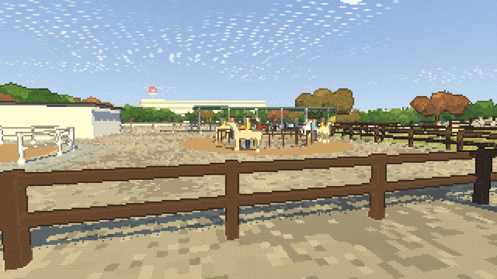
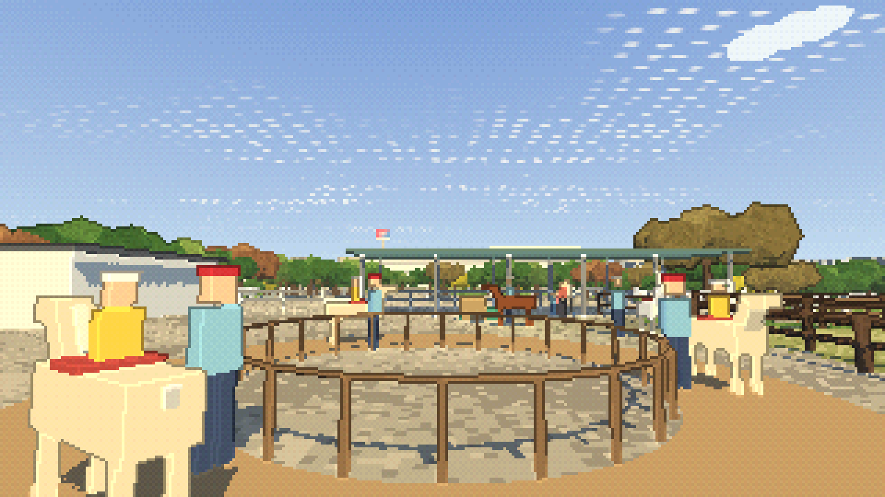
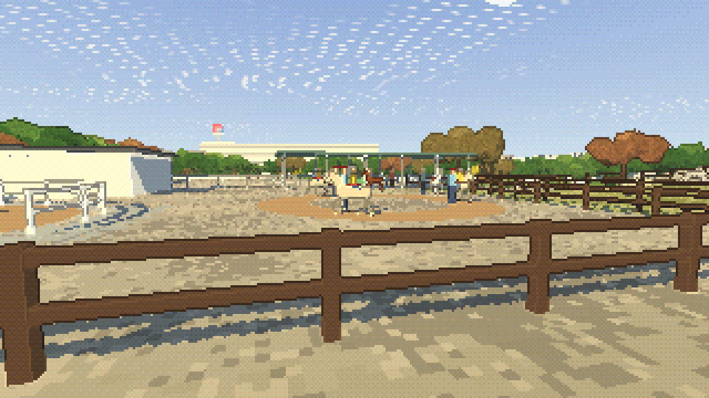
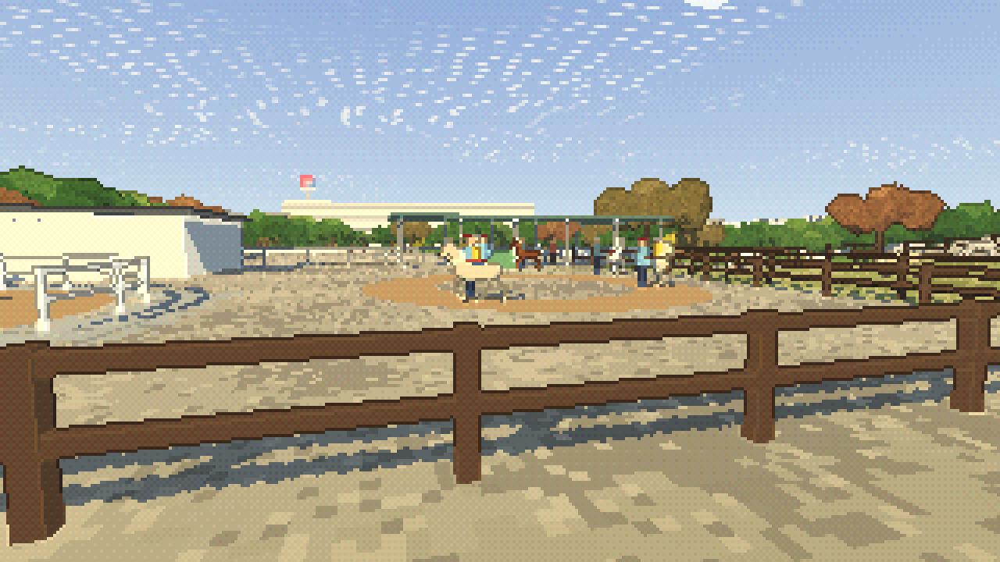
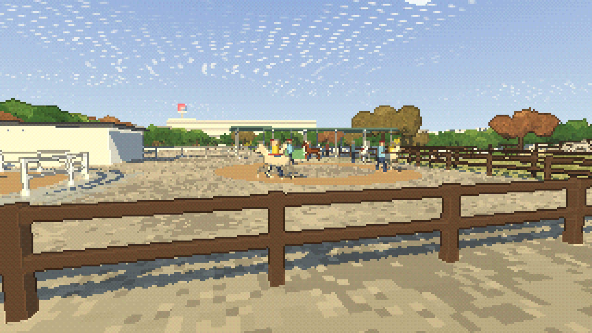
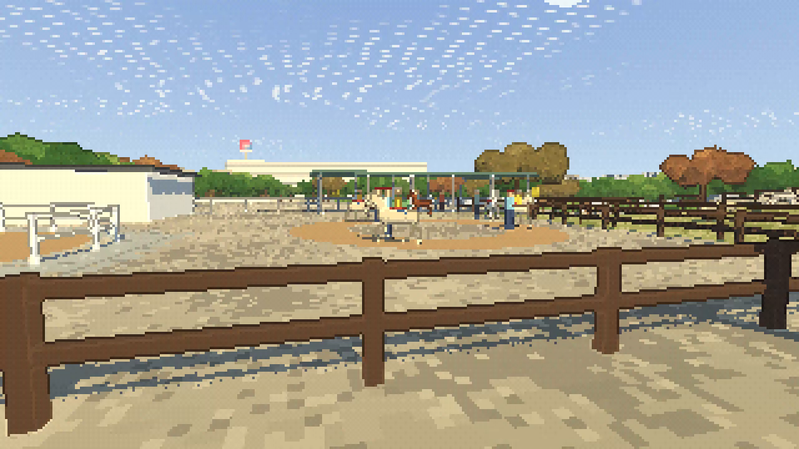
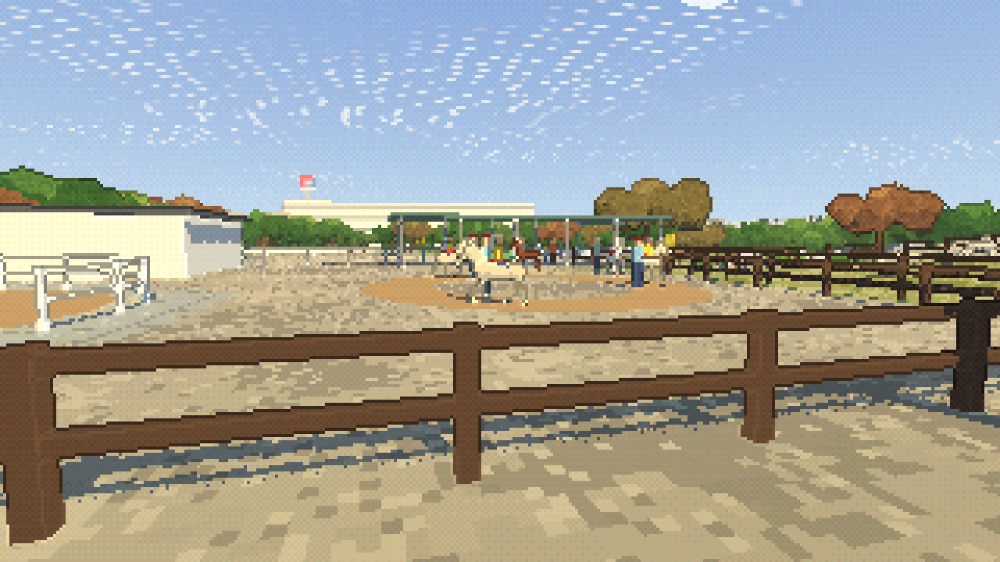
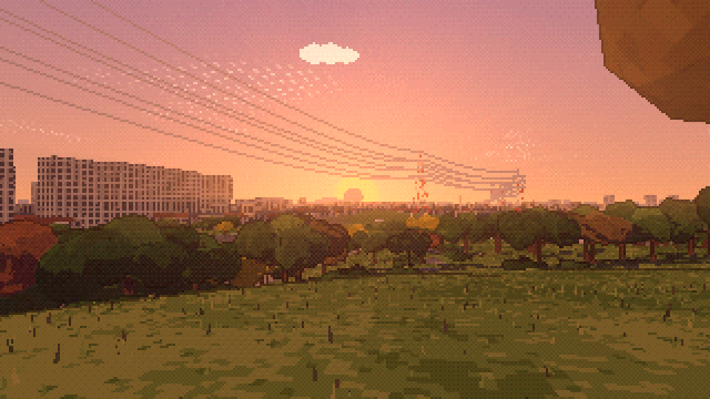

最新：再レビューで見つかった問題の修正・再検証。以下の画像と測定値は初回改修時の履歴です。
2026-10-27。施設の不要な内柵を除去し、ポニーの輪郭・4拍子の歩行・接地・手綱を改修。施設の寸法は推定です。6秒・12秒ループを維持するため、周回3頭は同じ外観です。
改修方針 / 詳細設計・測定値・未検証事項 / なぎさページ






ブラウザーの保存UIから生成したH.264 MP4です。ループ再生で継ぎ目を確認できます。圧縮と実時間のフレーム採取を含むため、先頭・末尾フレームの画素は一致しません。0秒と6秒の元の描画は一致しています。




改修前描画 / 改修後描画・実地形の接地 / 実保存・先頭姿勢 / 動画のフレーム解析 / 他ページの回帰確認 / 全回帰テスト